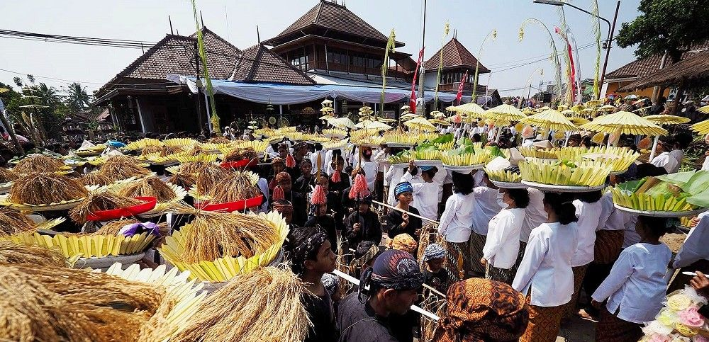
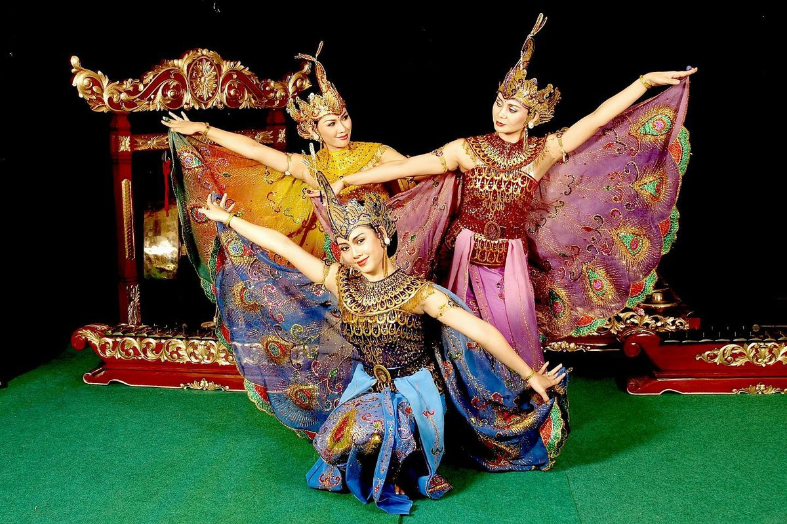
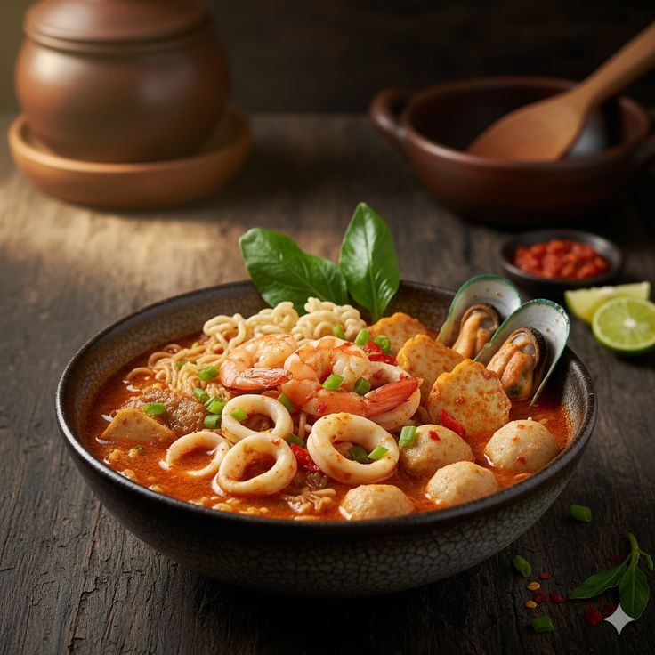
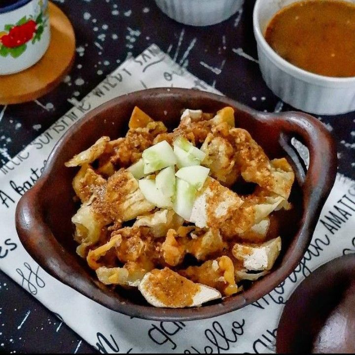
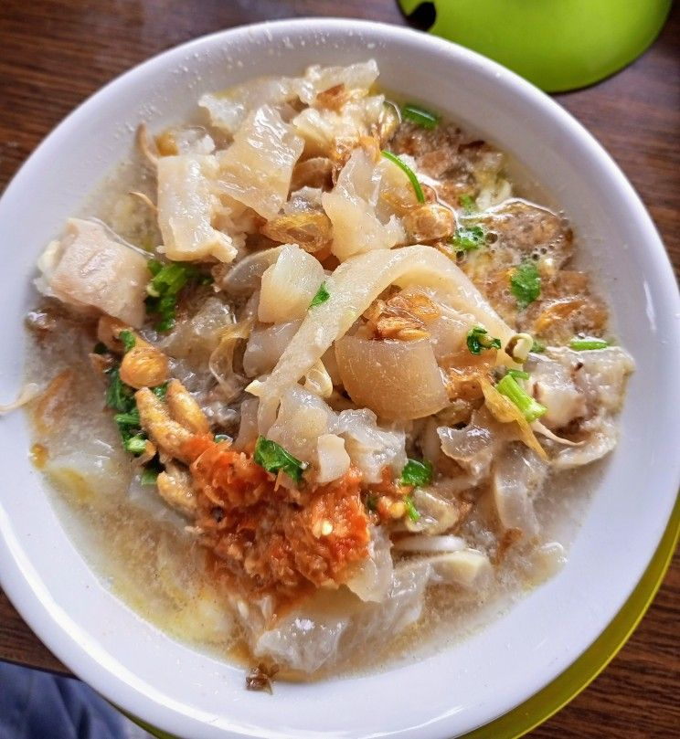
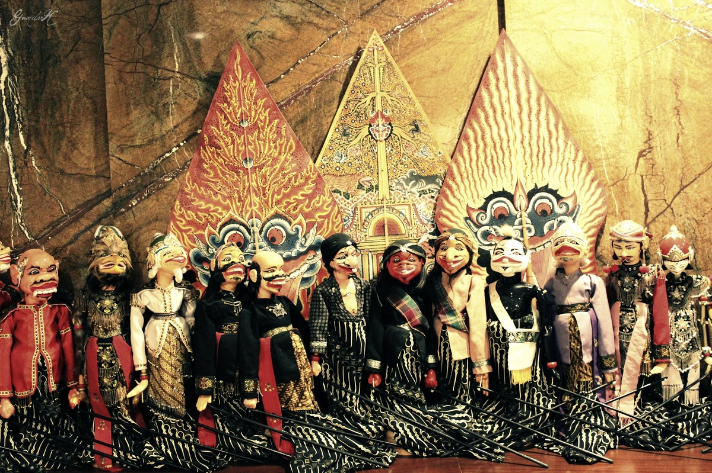
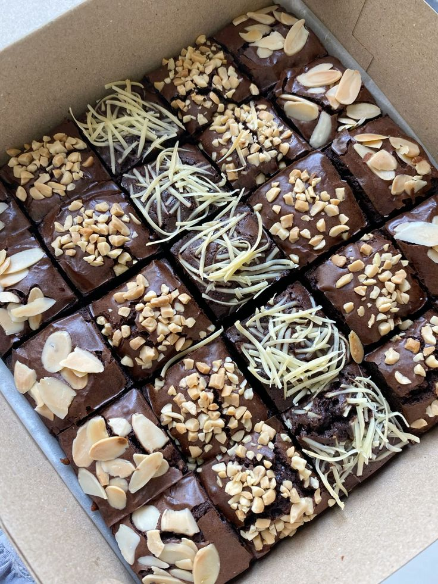
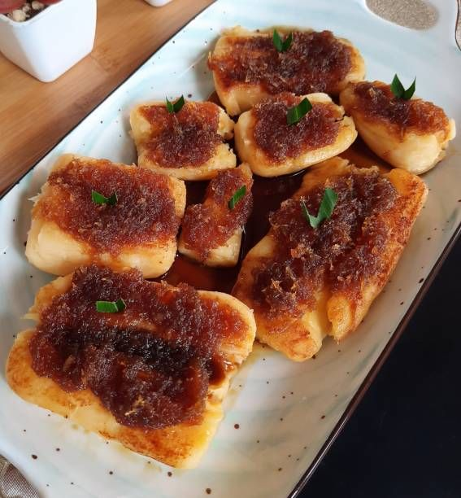

Bahasa
Bahasa
Bahasa Sunda
Kenali kosakata dan frasa dasar Bahasa Sunda yang digunakan dalam kehidupan sehari-hari.
Kenali lebih dalam tentang warisan budaya Sunda yang kaya akan nilai, tradisi, dan kearifan lokal.
Bahasa
Kenali kosakata dan frasa dasar Bahasa Sunda yang digunakan dalam kehidupan sehari-hari.
 Seni Pertunjukan
Seni Pertunjukan
Pelajari tentang alat musik tradisional Sunda yang terbuat dari bambu dan dimainkan dengan cara digoyangkan.
 Pakaian Adat
Pakaian Adat
Jelajahi ragam pakaian tradisional Sunda yang mencerminkan identitas dan budaya masyarakatnya.

Tradisi & UpacaraPelajari tentang upacara adat tahunan yang dilakukan oleh masyarakat Sunda untuk menyambut panen padi.

KesenianTarian elok yang mengekspresikan keindahan dan kelincahan burung merak jantan, kebanggaan seni tari Jawa Barat.

KulinerNikmati perpaduan rasa pedas dan gurih khas kerupuk basah dengan rempah kencur yang menggugah selera.

KulinerJajanan legendaris Bandung berupa bakso tahu goreng yang renyah, disiram saus kacang kental yang manis gurih.

KulinerHidangan mi kuning kenyal berkuah kaldu sapi kental, disajikan dengan potongan kikil empuk, tauge segar, dan perasan jeruk nipis.

KesenianKesenian teater boneka kayu khas Sunda yang sarat akan nilai moral, humor, dan cerita kepahlawanan epik.

KulinerOleh-oleh legendaris khas Bandung dengan tekstur yang sangat lembut, cokelat yang super pekat, dan manis yang pas.
Kesenian bela diri tradisional sejenis gulat tradisional Sunda yang tumbuh subur dan diiringi musik rampak yang meriah.

KulinerCamilan legendaris khas tatar Sunda berupa tape singkong (peuyeum) bakar yang disiram saus gula merah kental dan parutan kelapa.